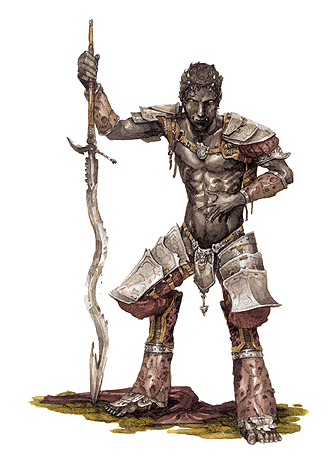

乌黯主君：格拉兹特（Graz’zt, The Dark Prince）
大型异界生物（混乱，邪恶）
生命骰数：36d8+324（486）
先攻权调整：+14
速度：40尺
防护等级：43（-1体形，+10敏捷，+6洞察，+13天然，+5盾牌），接触25，措手不及33
攻击：+48/+43/+38/+33（近战，酸液爆裂巨剑+5[+5 Acidic Burst Greatsword]）
伤害：2d6+13/17-20附加2d6点酸液伤害以及1点秽恶伤害（近战，酸液爆裂巨剑+5）
面宽/触及：5×5尺/10尺
特殊攻击：恐惧，类法术能力
特殊属性：伤害减免15/+6，快速医疗5，精通物品（Item Master），异界生物特性，识破隐形，法术抗力38，召唤塔那里，塔那里特性
豁免：强韧+29，反射+30，意志+26
属性：力量26，敏捷30，体质28，智力35，感知22，魅力39
技能：平衡+49，唬骗+50，攀爬+25，专注+45，交涉+58，易容+50，伪造文书+48，收集情报+50，躲藏+41，威吓+54，跳跃+11，知识（神秘）+48，知识（历史）+30，知识（宗教） +30，知识（位面）+48，聆听+42，潜行+45，探知+48，搜索+48，观言察色+42，法术辨识+30，侦察+42，翻滚+45
专长：顺劈砍，黑暗圣言，闪避，类法术能力强效（Empower Spell-Like Ability），寓守于攻，精通重击（巨剑），精通先攻，强力攻击，秽恶武术（巨剑，Vile Martial Strike），武器专攻（巨剑）
气候/地形：任意
组织：格拉兹特以及6名人身狮，吸精女妖或六臂蛇魔
挑战等级：24
宝物：四倍标准
阵营：混乱邪恶
进化：无
格拉兹特，最强大的恶魔大君之一，统治着无底深渊中的三个层面。他是一名高大，英俊，有着黑暗魅力的恶魔，皮肤黝黑，眼睛闪烁着妖异的绿光。格拉兹特穿着帝王的服饰，尖尖的耳朵和微黄的獠牙都张显出他的种族。而乌黯主君最令人惊异的特征莫过于他的六根手指和六根脚趾。
无数世界里都流传着这样的传说，一名皮肤黝黑的恶魔时而会宠幸女巫或是术士，带给她们强大的魔法力量，而格拉兹特就是这些传说背后的真相。这位性感诱人的恶魔大君身旁总是环绕着一批女性恶魔～通常情况下包括人身狮，吸精女妖以及六臂蛇魔。他词藻华丽，雄辩滔滔，以至于很多人常常把他误认为是魔鬼，这种魅力使得格拉兹特变得更加危险。
格拉兹特与狄摩高根以及奥喀斯之间一直保持着战争状态。曾经有一段时间，格拉兹特占到了上风，但不巧的是，他当时却被疯狂的大法师札吉格（Zagyg）召唤到了主物质位面。他被迫同意在自己的领地内软禁一段时间，才赢得了自由。现在，没人知道他还是否需要遵守这项条件～当然，格拉兹特本人对此无可奉告。
格拉兹特的标志是黑色的六指手掌。
战斗
格拉兹特能够使用大量类法术能力～甚至很多人误认为他是一名术士或是法师。当然，乌黯主君在需要出手时决不犹豫，而且他也和很多邪恶法师关系密切。同时，酸液爆裂巨剑的威力使他在近战时也毫不逊色。格拉兹特在进入战斗前，通常会启动以下能力：巧言术，邪恶灵光（防护等级+4，豁免+4）以及侦测思想。
恐惧（SU）：通过嘴角的一个冷笑或是呢喃一个字眼（自由动作），格拉兹特就可以施展如同法术“恐惧术”的效果（意志检定DC 42，忽略）。
类法术能力：随意施展强力降咒术，渎神之语，媚惑怪物，邪暗术（Damning Dakness），黑暗利箭（Darkbolt），深幽黑暗术，短讯暗示，亵渎术，侦测善良，侦测持续，侦测思想，感知位置，摄心目光，摄魂术，格拉兹特的远程魔爪（Graz’zt’s Long Grasp），高等解除魔法，魔法飞弹，群体媚惑术（Mass Charm），镜影术，暗示术，心灵遥控，无错传送术，巧言术（自身），邪居，邪恶灵光，邪影击，铁墙术，水中呼吸以及卑劣邪影击（Wretched Blight）。每日2次施展控制人类，变形他人，变形万物。每日1次施展解离术，囚禁灵魂（Trap the Soul），形体变化以及迷罩。施法者等级20；豁免DC 24+法术等级。
快速医疗（EX）：格拉兹特每轮回复3点生命值（注：与前文不符，疑有误）。快速医疗不能恢复由于饥渴或窒息损失的生命，同时也不能重新生长出失去的肢体。
精通物品（EX）：虽然格拉兹特不是一名施法者，但他可以使用任意魔法物品，甚至包括法杖和卷轴。但与狄摩高根不同的是，他不能靠本能力制造物品。
异界生物特性：格拉兹特用有60尺黑暗视觉，并且无法被更复或复活。
识破隐形（SU）：格拉兹特可以看透隐形的生物和物体，如同处在“识破隐形”的效果下。
召唤塔那里（SP）：每日一次，格拉兹特自动召唤1d2+1名迷诱魔（Glabrezu），或是1d2名巴洛炎魔。
塔那里特性：格拉兹特可以同100尺内任意有语言的生物进行心灵沟通。同时，格拉兹特对闪电和毒素免疫，并用有20点酸性抗力，20点寒冷抗力以及20点火焰抗力。
所有品：格拉兹特挥舞着一把蛇型巨剑，酸液爆裂巨剑+5，同时他还持有恶魔守护大钢盾+3 （+3 Demonmight Warded Large Steel Shield）。
格拉兹特的目标：
格拉兹特把自己的主要精力都花费在征服无底深渊上。他妒忌狄摩高根，他想要恶魔主君这个尊号。格拉兹特统治着阿兹格拉特，覆盖了三个层面的恶魔王国。而同时存在于三个位面的，则是都市泽拉塔，那里也座落着格拉兹特那由六十六座象牙塔组成的银宫。格拉兹特就住在座宫殿里，策划阴谋，积蓄力量。
格拉兹特喜欢阴谋诡计。虽然他并不害怕在战场上作战，但还是更喜欢用媚惑和算计自己的敌人。他是无底深渊中最聪明，最狡诈的生物～这点他自己也相当自豪。
乌黯主君也相当关注（通常是靠着间谍）凡间的情况。他喜欢和凡人交易，总是先慷慨地答应他们的要求，再慢慢榨取他们的价值。
格拉兹特的信徒：
除了在特定的怪物群体例如人身狮，格拉兹特的信徒通常规模不大。格拉兹特的祭司，也被称为选民，通常都是女性，而高阶牧师则一律都是女性。
格拉兹特喜欢人们在他的名下实行活祭，同时，缠绵狂野的交媾也在信徒的异端仪式中占据了相当重要的地位。格拉兹特的黑暗神庙通常与世隔绝，信徒纵酒狂欢。有些神庙笼罩在魔法黑暗之中，牧师在活祭的祭品上施展“唤起死灵”，从而创造出黯影守卫。
格拉兹特的牧师穿着黑色的衣服，上面装饰着银制的珠宝，大部分还配有蛇型剑（Wavy Blade）。侍奉格拉兹特的牧师可以选择的领域通常包括：恶魔，邪恶和黑暗。
信徒：安娜斯塔西亚（Anastasia）领导着一小群法师和牧师，他们在其中一个法师的酒馆地下室里秘密集会。镇民们都猜测，镇子里可能存在着一个地下的巫术团体，但不清楚具体情况。伊丝哈·蒂娜岑（Isha Denarthun）负责沙漠边缘一座巨大的格拉兹特神庙，六十多名人身狮在那里侍奉格拉兹特，守卫庙宇建筑，举行邪恶仪式。这座神庙也被称为“黑暗故乡”(Home of Darkness)，伊丝哈·蒂娜岑指导着活祭的程序，她们在黑暗的笼罩下把祭品溶解在强酸当中。贝斯莫则充当安娜斯塔西亚和黑暗故乡之间的联系人。伊丝哈·蒂娜岑乐于和人类合作，甚至常常给予他们些援助（通常是人身狮在神庙中铸造的魔法物品）以交换活祭的祭品。
安娜斯塔西亚，选民
女性人类，牧师7级
中型类人生物
生命骰数：7d8+14（44）
先攻权加值：+2
速度：20尺
防护等级：17，接触12，措手不及15
攻击：+7（近战，1d8+1，精制重型钉头锤）
特殊攻击：呵斥亡灵×7每日
阵营：混乱邪恶
豁免：体质+7，反射+6，意志+8
属性：力量13，敏捷15，体质14，智力11，感知17，魅力11
技能：手艺（绘画）+7，医疗+9，知识（宗教）+7，法术辨识+10
专长：盲斗，战斗施法，额外驱散，快速反射，恶魔仆役
通常法术（6/6/5/4/2；豁免DC 13+法术等级）：0级，造水术，侦测魔法（2），神导术，阅读魔法，提升抗力。1级，祝福术，治疗轻伤，黑暗视觉*，观命术，魔化武器，圣域术。2级，黑暗利箭*，黑暗术，坚韧术，人类定身术，灵能武器。3级，降咒术，深幽黑暗术(2)*，魔化防具。4级，邪暗术，邪影击*。
*领域法术。领域：黑暗（获得盲斗作为奖励专长），邪恶（在施展邪恶法术时，施法者等级获得+1的调整）。
所有品：精制胸甲，精制重型钉头锤，感知护符+2（Periapt of Wisdom+2），目盲术卷轴，邪暗术卷轴，深幽黑暗术卷轴。
伊丝哈·蒂娜岑，选民
女性人身狮，牧师6级
挑战等级：12
中型魔法野兽
生命骰数：9d10+9+6d8+6（90）
先攻权加值：+2
速度：60尺
防护等级：17，接触12，措手不及15
攻击：+13（近战接触，吸取感知，接触），或者+16/+11/+6（近战，1d4+1/19-20，匕首+1）
特殊攻击：呵斥亡灵×5每日，类法术能力，吸取感知
特性：60尺黑暗视觉，微光视觉
阵营：混乱邪恶
豁免：坚韧+12，反射+10，意志+13
属性：力量10，敏捷15，体质12，智力13，感知16，魅力14
技能：唬骗+14，专注+11，交涉+4，躲藏+14，威吓+4，知识（宗教）+7，潜行+8
专长：盲斗，闪避，钢铁意志，灵活移动，恶魔仆役，秽恶法术，武器熟捻（匕首）
类法术能力：每日1次施展媚惑人类，高等幻影，镜影术，暗示术。施法者等级9，豁免DC 12+法术等级。
吸取感知（SU）：当伊丝哈·蒂娜岑成功进行了近战接触攻击后，可以吸取目标的1点感知。她通常会在战斗早期使用本能力，使对方在“媚惑人类”和“暗示术”面前显得更加脆弱。
通常法术（5/5/5/4；豁免DC 13+法术等级）：0级，侦测魔法（2），神导术，阅读魔法，提升抗力。1级，绝望术，祝福术，黑暗视觉*，神恩术，随机行动（Random Action）。2级，公牛之力，黑暗利箭*，人类定身术（2），粉碎音波。3级，目盲术/耳聋术，治疗重伤，解除魔法，反善良法阵*。
*领域魔法。领域：黑暗（获得盲斗作为奖励专长），邪恶（在施展邪恶法术时，施法者等级获得+1的调整）。
所有品：匕首+1，治疗中度伤卷轴，复原术卷轴。
贝斯莫
女性人类，术士7级/格拉兹特的仆役6级
挑战等级：13
中型类人生物
生命骰数：7d4+28+6d4+24（90）
先攻权：+1
速度：30尺
防护等级：13，接触13，措手不及12
攻击：+5/+0（近战，1d4-1/19-20，匕首），或者+7/+2（远程，1d4-1/19-20，匕首）
特殊攻击：媚惑
特性：黑暗魅力+2，法术偷袭+3d6，法术打击+1d6，召唤恶魔
阵营：混乱邪恶
豁免：坚韧+8，反射+5，意志+14
属性：力量8，敏捷13，体质18，智利13，感知15，魅力20
技能：唬骗+17，交涉+16，威吓+7，知识（神秘）+7，聆听+8，潜行+9，探知+11，观言察色+4，法术辨识+11，侦察+8
专长：调制药水，钢铁意志，抄写卷轴，法术穿透，恶魔溥仪，秽恶法术
媚惑（SP）：每日1次，贝斯莫可以施展如同法术“媚惑人类”的效果（意志检定DC 16，忽略）。
黑暗魅力（EX）：贝斯莫在同邪恶生物进行有关魅力的检定时，可以在魅力上获得+2奖励。本奖励附加在理解动物，交涉，唬骗，收集情报，驯养动物以及表演检定上。
法术偷袭（SU）：若敌人失去敏捷加值，贝斯莫所施展的攻击性魔法可以附加+3d6点伤害。
法术打击（SU）：当敌人处于贝斯莫的近战威胁范围内时，贝斯莫所施展的攻击性魔法可以附加+1d6点伤害。
召唤恶魔（SP）：每日一次，贝斯莫可以召唤一名生命骰数5或以下的恶魔，如同一名15级施法者施展“怪物召唤术”。
法术掌握（6/8/7/7/6/4；豁免DC 15+法术等级）：0级，舞光术，眩晕术，侦测魔法，幻音术，光亮术，法师之手，修复术，魔法伎俩，阅读魔法。1级，冻寒之触，法师护甲，魔法飞弹，无声幻影，睡眠术。2级，目盲术/耳聋术，坚韧术，二级怪物召唤术，蛛网术。3级，加速术，闪电束，反善良法阵。4级，液化痛苦（Liquid Pain），死亡铁链墙（Wall of Deadly Chains）。5级，传送术。
所有品：防护戒指+2，幻术纸牌（Deck of Illusions），加速术卷轴，闪电束卷轴，坚韧药剂，匕首。
格拉兹特的手下
通常，六名状态良好的人身狮会随时伴随着格拉兹特。当格拉兹特住在银宫中时，萼哈丝和蕾露哈尼特丝，两名六臂蛇魔，也通常不会远离乌黯主君。在格拉兹特消失的时间内，她们用铁腕打理银宫的日常事务，也造成了不小的混乱。所以当格拉兹特最终从主物质位面返回时，不得不花上大力气重新恢复领地的秩序。雅塔菈领导着一队吸精女妖，专门负责渗透和间谍活动。
萼哈丝和蕾露哈尼特丝（2）
女性六臂蛇魔，术士6级
挑战等级：23
大型异界生物（混乱，邪恶）
生命骰数：9d8+45+6d4+30（105）
先攻权：+3
速度：40尺
防护等级：30，接触12，措手不及27
攻击：+16/+11/+6（近战，1d8+5/19-20附带1d6点酸液伤害，酸液爆裂长剑+1）以及+16（近战，1d8+3/19-20附带 1d6点酸液伤害，酸液爆裂长剑+1×2）以及+16（近战，1d8+3/19-20，邪恶长剑+1×3）以及+13（近战，4d6+2，尾扫）
面宽/触及：5×5尺/10尺
特殊攻击：紧勒（4d6+6），紧勒4d6+7，精通擒抱，类法术能力
特性：伤害减免20/+2，精通多武器作战（Enhaced Multiweapon Fighting），异界生物特性，法术抗力25，召唤塔那里，塔那里特性
阵营：混乱邪恶
豁免：坚韧+13，反射+11，意志+15
属性：力量19，敏捷16，体质20，智力19，感知18，魅力20
技能：唬骗+18，专注+15，交涉+9，躲藏+15，威吓+7，知识（神秘）+6，聆听+24，潜行+16，探知+14，搜索+17，观言察色+17，法术辨识+20，侦察+24
专长：寓守于攻，多重攻击，多重敏捷（Multidexterity），多武器作战（Multiweapon Fighting），强力攻击，类法术能力瞬发，秽恶类法术能力
紧勒（EX）：当萼哈丝和蕾露哈尼特丝成功进行擒抱后，可以尝试紧勒目标，造成4d6+7点钝击伤害。被紧勒的生物必须进行坚韧检定（DC 18），失败意味着角色在萼哈丝和蕾露哈尼特丝的缠绕时以及松开缠绕后的2d4轮内失去知觉。
精通擒抱（EX）：若萼哈丝和蕾露哈尼特丝用尾扫击中中等体形或以下的目标，则在造成正常伤害的同时可以尝试使用一个自由动作进行擒抱，并且不会引发借机攻击（擒抱奖励+28）。若萼哈丝和蕾露哈尼特丝是通过尾扫开始擒抱，则在同一轮内可以尝试进行紧勒。萼哈丝和蕾露哈尼特丝也可以选择以正常方式展开擒抱，或用尾巴卷住目标（擒抱奖励-20，但不视为正在进行擒抱）。在任何一种情况下，成功擒抱的当轮，目标都必须承受尾扫伤害和紧勒伤害。
类法术能力：随意施展操纵死尸，降咒术，混沌之锤，死云术，通晓语言，黑暗术，亵渎术，侦测善良，侦测秩序，侦测魔法，造成重伤，反善良法阵（自身），魔化武器，投影术，变形自己，烟火术，识破隐形，粉碎音波，心灵遥控，无错传送术（自身以及50磅物品），邪恶灵光以及邪影击。施法者等级13，豁免DC 15+法术等级。
精通多武器攻击（EX）：拥有本能力后，同时使用主武器和副武器攻击时，副武器的攻击骰减值降低2。本能力结合多重敏捷（Multidexterity）以及多武器作战两项专长，角色副手使用轻武器进行作战时，将不承受减值。
异界生物特性：萼哈丝和蕾露哈尼特丝拥有60尺黑暗视觉，并且不能被更复或复活。
召唤塔那里（SP）：每日一次，萼哈丝和蕾露哈尼特丝可以尝试召唤4d10名攫屈魔，1d4名狂战魔，1名判魂魔（成功率50%），1名迷诱魔（成功率20%）。
塔那里特性：萼哈丝和蕾露哈尼特丝可以同100尺内任意有语言的生物进行心灵沟通，同时，萼哈丝和蕾露哈尼特丝对闪电和毒素免疫，并又有20点酸液抗力，20点寒冷抗力以及20点火焰抗力。
技能：萼哈丝和蕾露哈尼特丝在聆听和侦察上获得+8。
法术掌握（6/8/6/4；豁免DC 15+法术等级）：0级，舞光术，侦测魔法，闪光术，幻音术，法师之手，冷冻射线，阅读魔法。1级，媚惑人类，冻寒之触，法师护甲，护盾术。2级，公牛之力，黑暗利箭。3级，闪电束。
所有品：邪恶长剑+1×3，酸液爆裂长剑+1×3，闪电束法杖（25发），邪恶法术材料（新鲜的类人生物的心脏，类人生物的脑子以及魔鬼心脏）。
雅塔菈
女性吸精女妖，游荡者6级
挑战等级：15
中型异界生物（混乱，邪恶）
生命骰数：6d8+6+6d6+6（60）
先攻权加值：+4
速度：30尺；飞行50尺（一般）
防护等级：25，接触16，措手不及25
攻击：+11（近战，1d3+1，利爪×2），或者+15/+10（近战，1d6+2/19-20，稀薄短剑+1[+1 Short Sword of Subtlety]）以及+6（近战，1d3，利爪）
特殊攻击：能量吸取，偷袭+3d6，类法术能力
特性：变换外形，伤害减免20/+2，反射闪避，异界生物特性，法术抗力12，召唤塔那里，塔那里特性，巧言术，陷阱，直觉闪避（不失去敏捷加值，无法夹击）
阵营：混乱邪恶
豁免：坚韧+8，反射+14，意志+9
属性：力量12，敏捷18，体质13，智力16，感知15，魅力21
技能：平衡+6，唬骗+17，专注+10，交涉+7，易容+17，逃脱+16，躲藏+16，威吓+7，跳跃+3，知识（神秘）+9，聆听+22，潜行+ 16，骑乘（马）+10，搜索+15，侦察+22，翻滚+10，使用魔法装置+11
专长：闪避，灵活移动，跳跃攻击，武器熟捻（短剑）
能量吸取（SU）：雅塔菈可以通过与凡人亲热或是接吻，吸取能量。若目标不自愿，则吸精女妖必须尝试进行擒抱（擒抱奖励+11），本动作会引发借机攻击。女妖的拥吻每次造成1级负向等级；目标必须进行感知检定（DC 15），失败意味着目标根本不能察觉被女妖吸取了等级。同时每造成1级负向等级，雅塔菈增加5点生命，若当前生命值超出最大生命上限，则获得临时生命值。另外，若目标未能在24小时内及时解除负向等级（例如使用法术“复原术”），则必须进行坚韧检定（DC 18），失败将意味着生物等级（或生命骰数）永久降低1。
类法术能力：随意施展媚惑怪物，鹰眼术/锐耳术，黑暗术，亵渎术，侦测善良，侦测思想，丧志术，幻化灵体（自身以及50磅物品），暗示术以及无错传送术（自身以及50磅物品）。每日1次施展邪影击。施法者等级12，豁免DC 15+法术等级。
变换外形（SU）：雅塔菈可以使用一个标准动作变形成任意小型到大型的类人生物。本能力效果如同法术“变形自己”，但只能变形成类人生物。
反射闪避（EX）：任何通过反射检定可以减半伤害的效果（如“火球术”），雅塔菈通过反射检定可忽略伤害。
异界生物特性：雅塔菈拥有60尺黑暗视觉，并且不能被更复或复活。
召唤塔那里（SP）：每日一次，雅塔菈可以尝试召唤1名巴洛炎魔（成功率10%）。
塔那里特性：雅塔菈可以同100尺内任意有语言的生物进行心灵沟通，同时，雅塔菈对闪电和毒素免疫，并又有20点酸液抗力，20点寒冷抗力以及20点火焰抗力。
巧言术：雅塔菈永久处在法术“巧言术”的效果下，施法者等级12。
技能：若雅塔菈处在变化形体的效果下，则在易容检定上获得+10的环境加值。
所有品：稀薄短剑+1，防护戒指+2，猫之优雅药剂，坚韧药剂，公牛之力药剂。